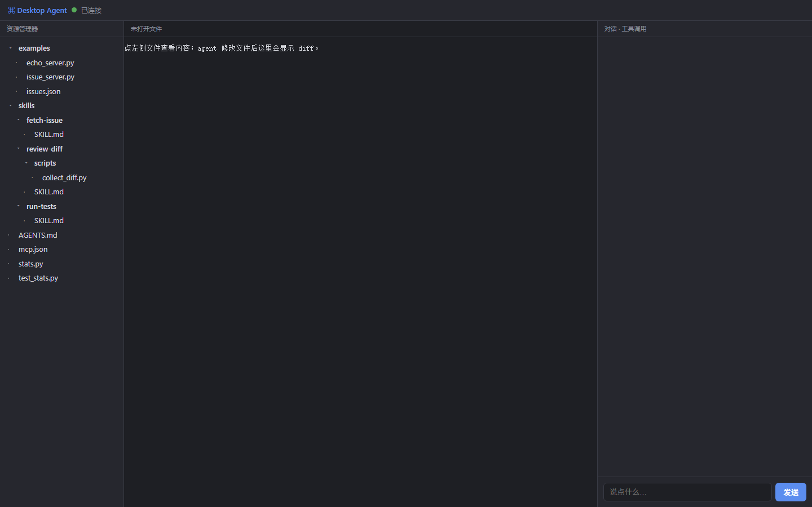

版本：1.2.0 适用系统：Windows 10 / 11 64 位
Desktop Agent 是一个可安装到 Windows 的桌面智能体。它不是网页截图，也不是只会聊天的窗口：它在桌面窗口中接入大模型，能够读取和修改真实文件、执行命令、调用 MCP 工具，并把每一步工具调用、diff 和测试结果展示出来。

desktop-agent 的 Python 源码。DesktopAgent-1.2.0-Portable.zip（推荐，内含一键安装脚本）或 DesktopAgent-1.2.0-Setup.exe。两者都自带 Python 3.12 运行时和全部依赖，目标电脑不需要预装 Python，也不需要管理员权限。app\，与开发时使用的源码一致；安装包内也带有源码。docs\GITHUB_URL.txt。这个安装器是课程作业构建产物，没有商业代码签名证书。Windows SmartScreen 可能提示“未知发布者”，此时点“更多信息 → 仍要运行”。如果电脑开启了“智能应用控制”并强制阻止未签名 EXE，请使用 ZIP 包中的一键安装脚本；脚本使用系统自带命令和已签名的 Python 运行时，不会被拦截。
推荐方式（适用于开启了智能应用控制的电脑）：
DesktopAgent-1.2.0-Portable.zip，选择“全部解压缩”。安装 Desktop Agent.cmd。%LOCALAPPDATA%\Programs\DesktopAgent。%APPDATA%\DesktopAgent\.env。如果 DesktopAgent-1.2.0-Setup.exe 能正常运行，也可以直接双击它，效果相同。
.env 中找到这一行：LLM_API_KEY=sk-xxx把它替换成你自己的 API Key，例如：
LLM_API_KEY=sk-你的真实KeyDeepSeek 用户可以在 <https://platform.deepseek.com/api_keys> 创建 Key。默认配置已经是 DeepSeek 的 OpenAI 兼容接口，一般只需要改 LLM_API_KEY 一行。
Desktop AgentDesktop Agent → Desktop Agent%LOCALAPPDATA%\Programs\DesktopAgent启动 Desktop Agent.vbs（双击不显示黑色控制台窗口）启动 Desktop Agent（调试）.cmd（显示 Python 错误信息）开始菜单中有 配置 API Key，也可以直接按 Win + R，输入：
notepad %APPDATA%\DesktopAgent\.env不要把带真实 Key 的 .env 上传到 GitHub。仓库只保存 .env.example。
左侧是工作区文件树，中间是代码/diff，右侧是对话和工具调用。所有智能体事件都从后端事件流推送，不依赖前端伪造。
read、write、edit、bash 和 MCP 工具卡片；支持两类接口：
openai：OpenAI 兼容接口，默认 https://api.deepseek.com + deepseek-chat；anthropic：Anthropic Messages API；mock：无需 Key 的固定剧本模式，只用于课程演示和联调。相关配置全部在 %APPDATA%\DesktopAgent\.env。
| 工具 | 功能 | 关键防护 |
|---|---|---|
read | 按行读取文件，支持分页和图片 | 行号清晰；图片以内容块返回 |
write | 创建/覆盖文件 | 自动建目录；临时文件 + rename 原子写 |
edit | 精确字符串替换 | 0 次或多次匹配都报错，拒绝模糊修改 |
bash | 执行命令，返回 stdout/stderr/退出码 | 超时；工作区沙箱；中断时杀进程 |
所有文件路径经过 resolve() 和工作区前缀校验，../ 越界会被拒绝。
启动时只把技能名称和描述放进系统提示；模型真正需要时才调用 use_skill 读取正文，避免把全部流程塞进上下文。
内置三个技能：
run-tests：先跑测试，红灯定位，改完再跑绿灯；review-diff：收集 diff 并做只读审查；fetch-issue：通过本地 issue-tracker MCP server 获取 issue。项目级 AGENTS.md 会从工作目录向上查找；也支持全局 ~/.agents/AGENTS.md。模型因此知道项目结构、命令和坑，不需要每次重复解释。
.env、.pem、.key 等敏感文件写入；write / edit 后自动寻找并运行测试；主 agent 可以调用 reviewer 检查当前 diff。reviewer 使用独立的只读工具箱，不能写文件、不能执行任意命令，只把审查摘要返回主上下文，减少上下文污染。
项目自带两个示例 MCP server：
filesystem-echo：演示 echo 工具；issue-tracker：演示 fetch_issue / list_issues。配置位于工作区的 mcp.json。工具统一命名为 mcp__<server>__<tool>，界面显示紫色 MCP 徽章，与内置工具区分。
%APPDATA%\DesktopAgent\.session\history.json，重启后自动恢复；http://127.0.0.1:8765/api/events；启动后等待 2–5 秒，顶部应出现绿点和“已连接”。如果一直是红点，先看 启动 Desktop Agent（调试）.cmd 是否报错。
点击右侧输入框，输入：
请先读取 stats.py，定位空列表均值返回类型的问题，修复后运行 test_stats.py，最后调用 MCP echo 工具确认链路。一次成功运行会依次出现：
read 工具卡片，读取 stats.py；edit 工具卡片；若替换字符串不唯一，会先出现一次红色失败卡片；bash 运行测试，输出通过；mcp__filesystem-echo__echo，右上角出现紫色 MCP 徽章；如果暂时没有 Key，把 .env 改成：
LLM_PROVIDER=mockmock 模式会按固定剧本执行 read → 失败 edit → 成功 edit → 测试 → MCP echo，适合课堂演示，但不会真正理解新问题。
%LOCALAPPDATA%\Programs\DesktopAgent\
├── app\ 完整 Python 源码
│ ├── agent\ 循环、工具、LLM、MCP、skills、hooks、reviewer
│ ├── server\ FastAPI + WebSocket + SSE
│ ├── ui\ HTML/CSS/JavaScript 三栏界面
│ ├── skills\ 三个技能
│ └── examples\ 两个示例 MCP server
├── runtime\python\ 自带 Python 3.12 + 全部依赖
├── docs\ 本说明与截图
├── 启动 Desktop Agent.vbs
├── 启动 Desktop Agent（调试）.cmd
├── Uninstall.cmd
└── .env.example（也保留在 app\ 下）
%APPDATA%\DesktopAgent\
├── .env 你的 API Key 和模型配置
└── .session\history.json 对话历史
%USERPROFILE%\Documents\DesktopAgent\workspace\
├── stats.py 演示项目
├── test_stats.py
├── skills\ 工作区技能副本
├── examples\ 工作区 MCP server 副本
├── mcp.json
└── AGENTS.md用户代码在“文档 / DesktopAgent / workspace”中，卸载程序不会删除它。
先确认只启动了一个 Desktop Agent。默认端口是 8765；如果旧进程仍占用端口，新进程的后端会启动失败。任务管理器结束旧的 pythonw.exe，或在命令提示符执行：
taskkill /f /im pythonw.exe注意：这会结束当前用户下所有 pythonw 进程，执行前确认没有别的 Python 桌面程序在运行。
LLM_API_KEY 是否完整、有没有多余空格；LLM_BASE_URL 和 LLM_MODEL 是否匹配；.env 后必须重启程序。安装 Microsoft Edge WebView2 Runtime（Evergreen）：
<https://developer.microsoft.com/microsoft-edge/webview2/>
Windows 11 和大多数已安装 Edge 的 Windows 10 已经自带 WebView2。
这是课程构建产物，未购买代码签名证书。点击“更多信息 → 仍要运行”。如果系统策略直接阻止，请使用便携版 ZIP。
前端静态文件在 app\ui。修改 app.js 或 style.css 后，把 app\ui\index.html 里的 ?v=5 改成新版本号，或清理 WebView2 缓存后重启。
打开开始菜单 → Desktop Agent → 卸载 Desktop Agent，或在 Windows“设置 → 应用 → 已安装的应用”中卸载。程序目录会被删除；%APPDATA%\DesktopAgent 和文档工作区会保留，便于保留 Key 与代码。
如需彻底清理，在确认备份后手动删除：
%APPDATA%\DesktopAgent
%USERPROFILE%\Documents\DesktopAgent| 作业要求 | 对应文件 |
|---|---|
| 1. 安装包（里面有代码） | DesktopAgent-1.2.0-Portable.zip（推荐）/ DesktopAgent-1.2.0-Setup.exe，安装后代码在 app\ |
| 2. 说明：来源、功能、GitHub | 安装与使用说明.pdf / .md，GitHub 地址见第 1 节 |
| 3. 演示视频 | DesktopAgent-演示视频.mp4 |
实际录制文件为 DesktopAgent-演示视频.mp4，约 95 秒，带中文字幕。视频依次展示：
stats.py；bash 测试通过、MCP echo 调用；mcp.json 与 Skills 按需加载；8765，同一用户同时启动两个实例时，第二个实例会连接失败；test_*.py 或 tests/，复杂项目建议显式设置 AGENT_TEST_CMD。仓库地址： 待上传（取得 GitHub URL 后更新本行与第 1 节）
构建时间： 2026-11-07 版本： 1.2.0